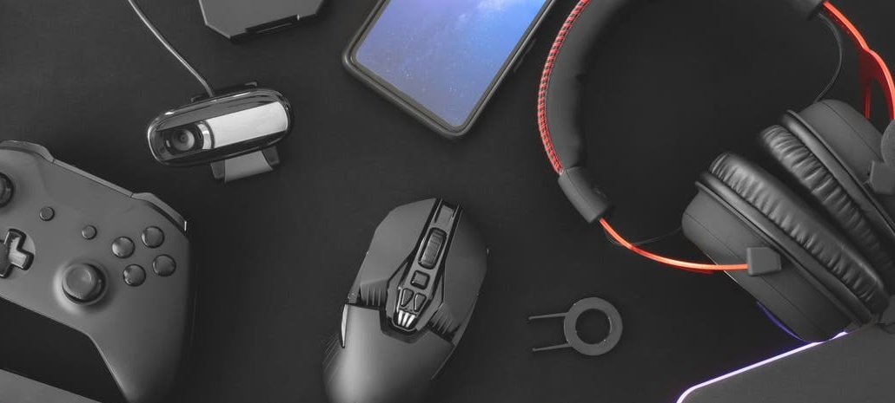

Los deportistas profesionales se cuelan en los torneos de videojuegos
Javier Cortes Especialista de Tecnologia
La última vez que el Mónaco alcanzó una final en un torneo europeo fue en 2004 y fue amarga: el Oporto le arrebató la que pudo haber sido su primera Champions League.
Este año, el equipo monegasco disputó otra final en la que se impuso al Celtic, aunque la competición no tuvo lugar en los estadios a los que nos tiene acostumbrados la Liga de Campeones: esta vez, el partido se jugaba dentro de una computadora.
Los organizadores de la liga eFootball.Pro, un torneo de eSports de fútbol pensado para clubes de fútbol, pueden estar contentos con los resultados de su primera edición. Trabajan mano a mano con Konami -la compañía que desarrolla el videojuego Pro Evolution Soccer-, han organizado eventos en España, Italia y Alemania y han alcanzado una audiencia nada desdeñable: los videos en directo de los partidos de la competición tuvieron más de un millón y medio de visualizaciones. Lo más curioso de todo esto es que el impulsor de esta iniciativa y creador de Esports Media Rights, la compañía que gestiona este torneo, no es un empresario al uso, sino el futbolista profesional Gerard Piqué.
"Piqué ha aportado al proyecto su conocimiento del sector deportivo, clave para conseguir que jugadores y clubes estén a gusto y que la competición tenga interés para los espectadores y aficionados", señala el director ejecutivo de la empresa, Jordi Orteu. En su opinión, todavía estamos empezando a ver lo que los deportistas tradicionales pueden aportar a los eSports. "Con la evolución y el crecimiento del sector, es probable que esta tendencia vaya en aumento y la implicación de los deportistas sea mayor".